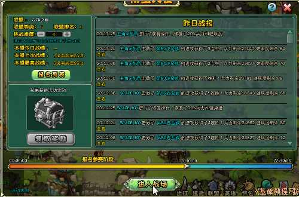

塔防游戏部落守卫战新手攻略
作者：TeliuTe 来源：基础教程网
九、南蛮入侵 返回目录 下一课联盟中一个重要的活动，就是联合起来共同抵御蛮怪的入侵；
1、南蛮入侵
1）点击下边任务栏上的“联盟”，进入联盟面板；
2）再点上边的“活动”标签，里面第三个就是南蛮入侵；
3）点击左边的“报名”加入到报名列表中，每天19:30之前是报名阶段，超过就不能报名了；
4）到19:30后，盟主开启作战，联盟成员都会收到开始作战的邮件，这时就可以点击“进入战场”参战，
如果按钮没有变成“进入战场”，关闭重新进入联盟即可；

5）进入后显示战场面板，左边是蛮怪中间是作战队列，右边是联盟报名战斗的成员；
6）在左侧的蛮怪队列中，上边显示了总数，剩余的数量，下边显示了当前的蛮怪，它的战力和布阵模式；
7）中间显示了对阵双方的情况，双方的人员和布阵，蛮怪到达时间，新一波来临有10秒时间可供布阵；
8）在右侧列表中，根据战力找到自己的位置，提前一轮在左侧找到蛮怪的排兵阵形，，
当前一轮作战时，就点击下边的“布阵”按钮，针对蛮怪的布阵，排列自己的兵士
；
9）把鼠标移到中间兵士图标的两侧，左右就会出现三角方向箭头，点击可以和旁边的兵士交换位置；
10）布阵是根据兵士相克原则，炮兵克弓兵，弓兵克魔法，魔法克勇士，勇士克炮兵，点击兵营可以找到相克关系；
11）例如，蛮怪排列是弓、炮、勇、魔，那么我就要排成炮、勇、魔、弓，然后赶快点“确定”，然后再点“布阵”，准备下一波的排兵；
12）与蛮怪的对战开始后，有一次恢复兵力和健康的机会，可以恢复20%的兵力，
当感觉自己打不过下一波蛮怪时，赶快点击“恢复”按钮，尽可能多的消灭敌人，
每个成员最多可以抵御5波蛮怪，然后退出战斗由下一人来接替作战，因此参战盟友越多越好；
本节学习了南蛮入侵的基础知识，如果你成功地完成了练习，请继续学习下一课内容；
本教程由86团学校TeliuTe制作|著作权所有
基础教程网：http://teliute.org/
美丽的校园……
转载和引用本站内容，请保留作者和本站链接。